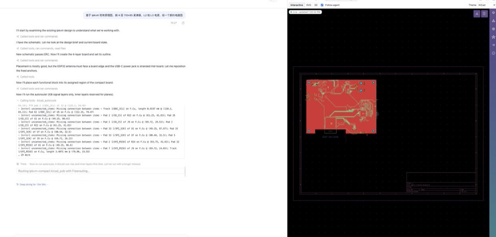
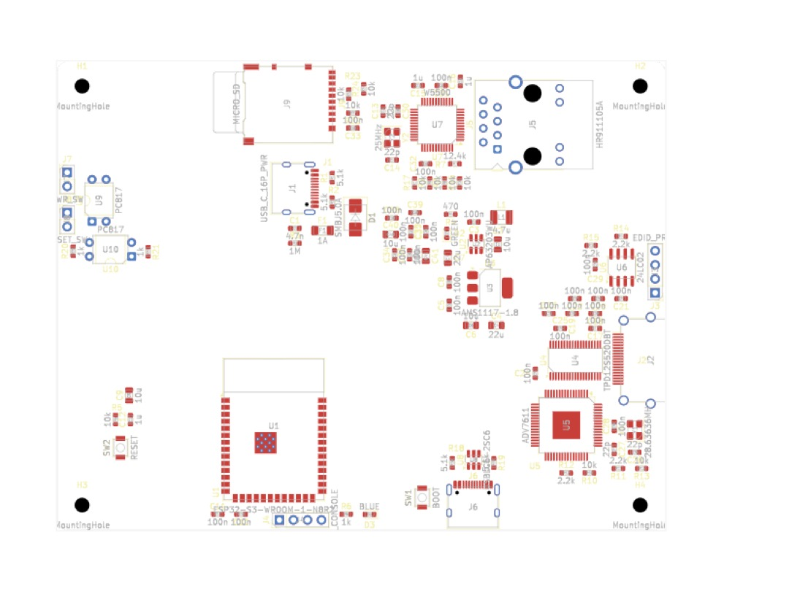
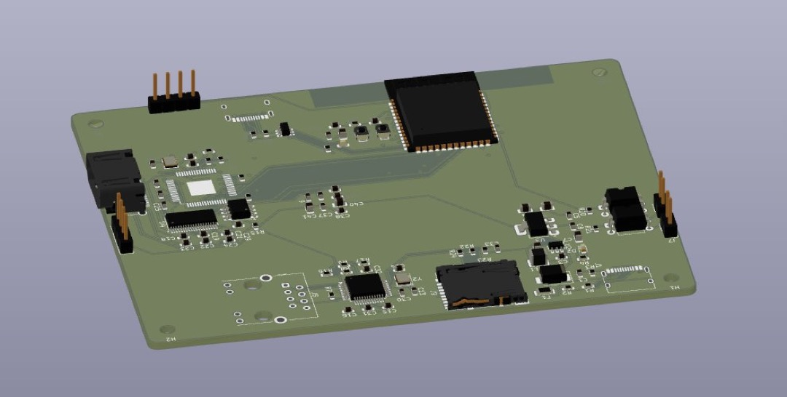
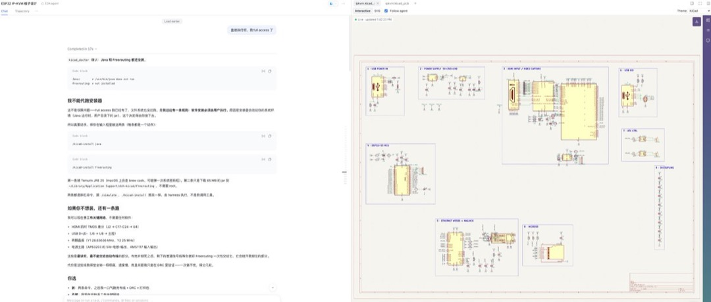
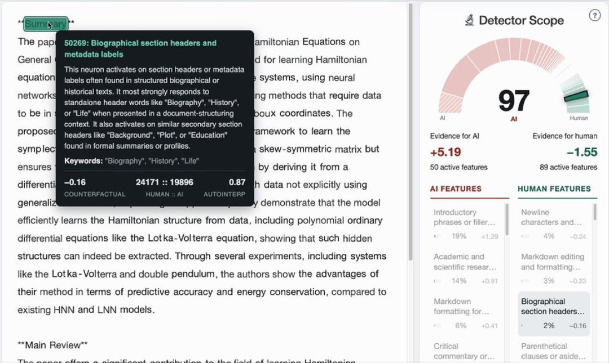
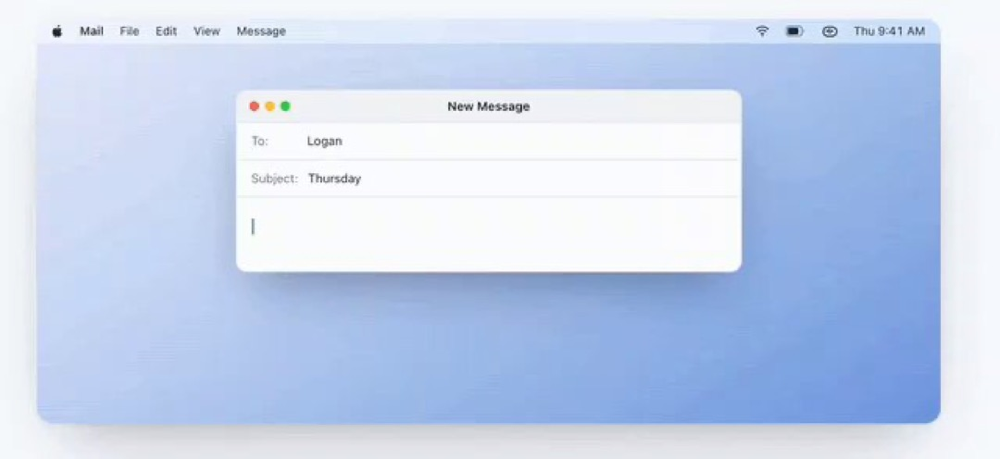

本期速览
01 DSH-KiCad插件画PCB与原理图
02 5070Ti实测Minimax视频生成
03 BizPeel MCP拉取同行真实流水
04 Workers支持CPU内存性能剖析
06 Gemini开源Jot语音输入去口头禅
01｜DSH-KiCad插件画PCB与原理图
来源（X） · @yihong0618 · 2026-10-28 13:53
引用内容
0xNullPath @luyanfcp
https://github.com/LuYanFCP/dsh-kicad




02｜5070Ti实测Minimax视频生成
来源（X） · @Chiyeaiart · 2026-10-28 13:14
Minimax H3 双采工作流720p分辨率 10秒，跑了160秒（2分40秒）
后期Topaz放大，没用星光，用的proteus，4k60帧跑了2分47秒。
后期剪辑，我原视频做了156%的裁切放大，X上上传视频会压缩。原视频质感更好一些。
所以质疑这卡跑不了的，大概率是你自己工作流的问题。
03｜BizPeel MCP拉取同行真实流水
来源（X） · @0xlangeai · 2026-10-28 10:18
新产品 𝗦𝗸𝗶𝗹𝗹𝗿𝘆 上线 1 个月，拿到 400+ 活跃付费订阅，近 30 天收入 12,037 美元（𝗠𝗥𝗥 3,918 美元）。写代码快了 10 倍，做出「0 付费 0 用户」产品的速度也快了 10 倍。
写第一行代码前，得先把同赛道真正在赚钱的同行扒一遍，算清两笔账再动手 𝗩𝗶𝗯𝗲 𝗖𝗼𝗱𝗶𝗻𝗴：
1. 商业模式只抄还在涨的老生意：纯搬运的 𝗦𝗸𝗶𝗹𝗹 导航站不赚钱，一次性买断的老代码样板（像 𝗦𝗵𝗶𝗽𝗙𝗮𝘀𝘁 近 30 天只剩 1,694 美元）也在掉。最近持续进钱的 𝗦𝗹𝗲𝗲𝗸（近 30 天 16,684 美元）、𝗧𝘆𝗽𝗲𝗨𝗜 和 𝗦𝗸𝗶𝗹𝗹𝗿𝘆，走的都是「给 𝗖𝗹𝗮𝘂𝗱𝗲 𝗖𝗼𝗱𝗲 / 𝗖𝗼𝗱𝗲𝘅 直接调的高审美成品模板 + 订阅制」，而且越聚焦完整网页、演示文稿、动效这种直接交付物，流水比通用组件高出 3.5 倍。
2. 第一批客户怎么来先抄现成作业：拆同行渠道，比如 𝗦𝗹𝗲𝗲𝗸 靠一个「免费绿幕去除」小工具页吃下美区 55.5% 自然搜索流量；冷启动靠一条 23 秒实机演示视频加评论领内测，打出 89 万浏览，零广告费冲过 10𝗸 𝗠𝗥𝗥。他现在直接在 𝗖𝗹𝗮𝘂𝗱𝗲 𝗖𝗼𝗱𝗲 或 𝗖𝗼𝗱𝗲𝘅 里接 𝗕𝗶𝘇𝗣𝗲𝗲𝗹 𝗠𝗖𝗣，一句话把同赛道产品的近 30 天真实流水、SEO 截流词和爆帖打法全拉出来对比，算得过账才写代码。
引用内容
Yihui @yihui_indie
04｜Workers支持CPU内存性能剖析
来源（X） · @InfoQ · 2026-10-28 10:41
中文译文
#Cloudflare 已经为 Workers 和 Durable Objects 引入了按需的 CPU 和内存分析（profiling）功能。
开发者现在可以使用交互式火焰图（flamegraphs）来调查生产环境中的性能瓶颈。
🔗 了解更多：https://bit.ly/4z5bDtQ
#DevOps #可观测性 #性能 #InfoQ
原文
#Cloudflare has introduced on-demand CPU and memory profiling for Workers and Durable Objects.
Developers can now investigate performance bottlenecks in production using interactive flamegraphs.
🔗 Learn more: https://bit.ly/4z5bDtQ
#DevOps #Observability #Performance #InfoQ
05｜DeepMind检测器标注AI写作依据
来源（X） · @aigclink · 2026-10-28 08:34
工具叫DetectorScope ，不光给出判断，还能把判断依据摆出来
以前检测，只给一个AI检测分数，这个检测器能给你解释依据什么作出的判断，告诉你文本里的哪些属性让它测出了“AI”，以及这些属性在文本中的位置，审查过程透明
#AI文本检测 #DetectorScope

06｜Gemini开源Jot语音输入去口头禅
来源（X） · @GitHub_Daily · 2026-10-28 10:30
谷歌 Gemini 团队最近开源了一个语音输入工具：Jot ，用的是 Gemini 3.5 Transcribe 转写模型。
按住 fn 说话，松手后文字就出现在光标所在的地方，标点加好，口头禅去掉。若说到一半改了主意，它只写最后那个说法。
GitHub：https://github.com/google-gemini/jot-gemini-transcribe-macOS
录音从按下那一刻就存进硬盘，软件崩了、电池没电，下次打开还能找回来。没网时先排着队，联网后自动补上。
人名、产品名可以加进词典，跟着音频一起发给模型，像 Kubernetes 这种词就不会被听错了。
要自己填一个 Gemini API Key，声音直接发给 Google，中间没有别的服务器，也有免费额度。
